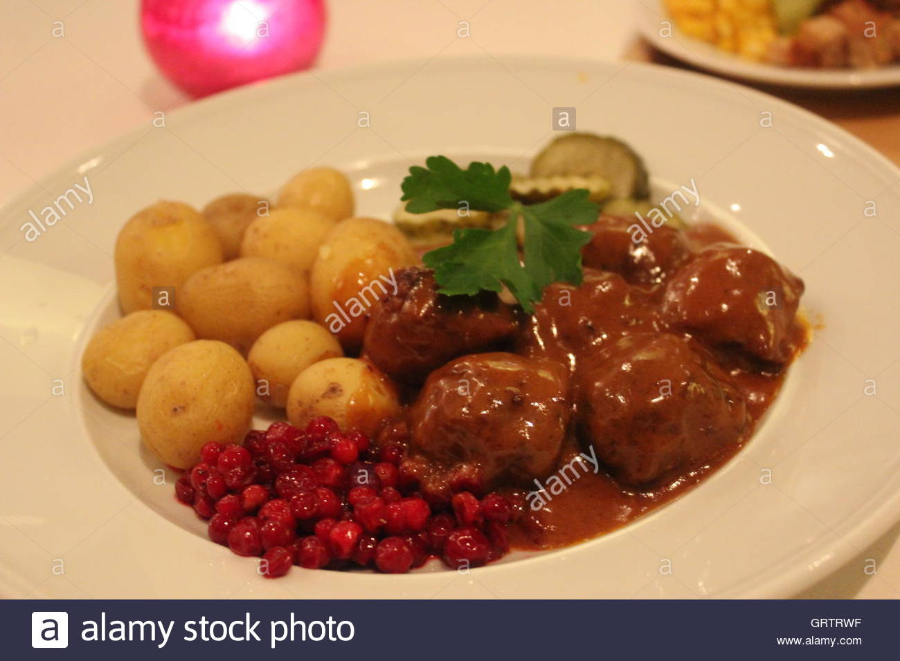

Meatballs
| Difficulty |
Time |
Servings |
Grade |
Comments |
| Intermediate |
45 minutes |
4 |
4.5/5 |
2 |
Ingredients
| Ground beef |
600 gram |
| Yellow onion |
1 |
| Eggs |
2 |
| Cream |
1.5 dl |
| Breadcrumbs |
1 dl |
| Potatoes |
8 medium sized |
| Salt |
As you prefer |
| Pepper |
As you prefer |
| Butter |
For frying |

How to prepare it:
-
Boil the potatoes in lots of water until they no
longer are raw inside.
-
Chop up the onion into as small pieces as you can
and mix in a bowl with the ground beef, egg and
breadcrumbs.
-
Form the beefmix into balls as big as you want and
fry in a pan at medium-high temperature with salt
and pepper.
-
When you have fried all the meatballs, pour the
cream into the pan to make gravy and serve with
lingonberryjam.
Comments
At 2017-11-03 12:48 Calle wrote:
Fysatan vad gott det var!!!!!
At 2017-11-03 13:25 Ricky wrote:
Can someone please translate what Calle wrote? Would be much appreciated!